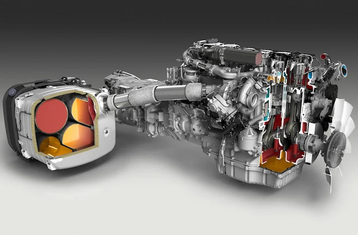
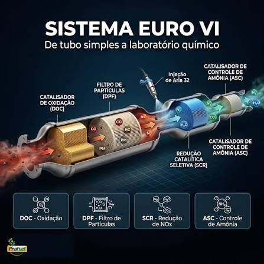
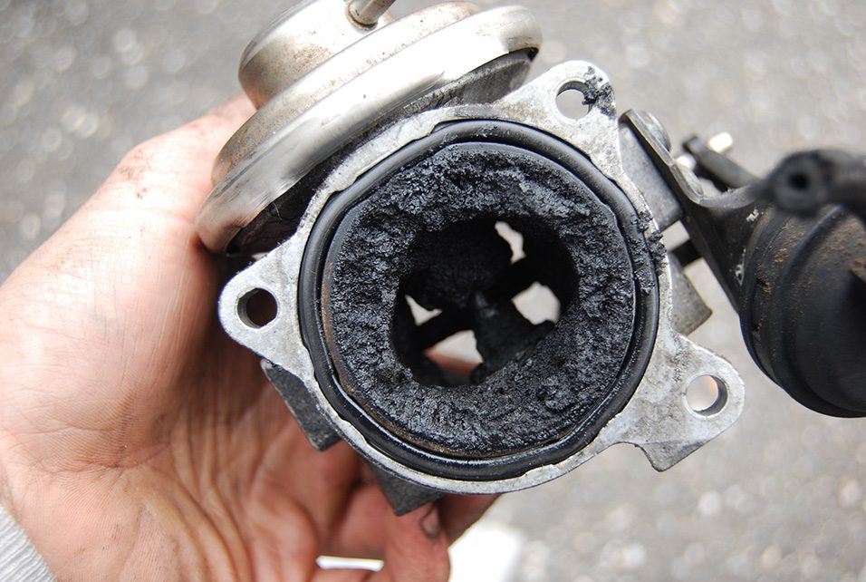
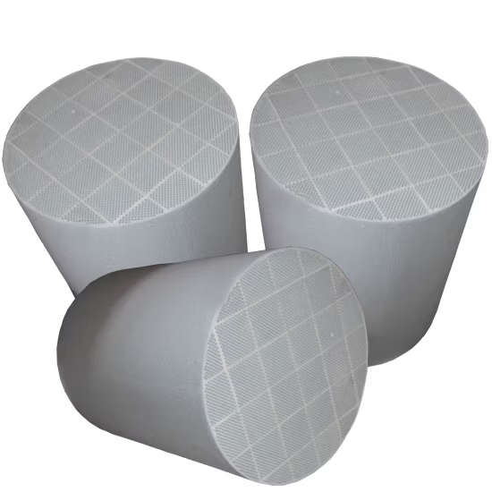
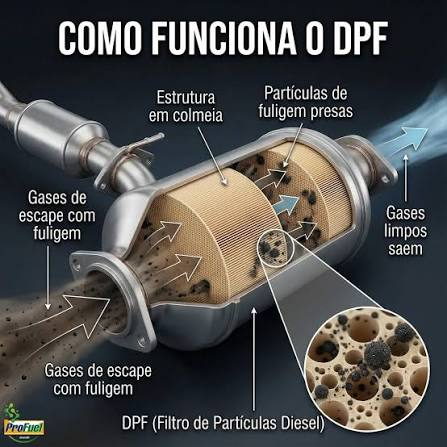
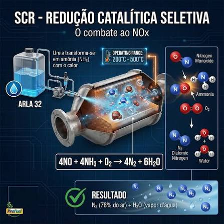
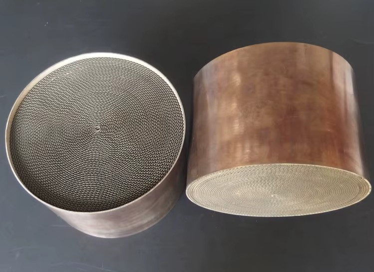

| Introdução: O Contexto Brasileiro: Da Norma Euro VI ao Proconve P8 No Brasil | 3 |
| Arquitetura Euro 6 | 4 |
| I. EGR (Exhaust Gas Recirculation) | 5 |
| 1. Acúmulo de Carbono e Fuligem (Entupimento) | 5 |
| 2. Válvula Travada Aberta | 5 |
| 3. Válvula Travada Fechada | 5 |
| 4. Falhas Elétricas ou Eletrônicas | 5 |
| 5. Problemas no Acionamento a Vácuo (Modelos Mais Antigos) | 5 |
| II. DOC (Diesel Oxidation Catalyst) | 6 |
| 1. Contaminação por Óleo (Envenenamento) | 6 |
| 2. Entupimento ou Restrição por Fuligem e Detritos | 6 |
| 3. Falhas na Eficiência Química (Degradação) | 6 |
| 4. Danos Térmicos (Super Aquecimento e Derretimento) | 6 |
| 5. Danos Físicos e Mecânicos (Impactos) | 6 |
| 6. Principais Sintomas de Problemas no DOC | 6 |
| III. DPF (Diesel Particulate Filter) | 7 |
| 1. Entupimento e Saturação por Fuligem | 7 |
| 2. Contaminação por Cinzas (Óleo do Motor) | 7 |
| 3. Falhas Crônicas de Regeneração | 7 |
| 4. Diluição do Óleo do Motor (Combustível no Cárter) | 7 |
| 5. Danos Térmicos (Trincas ou Derretimento) | 7 |
| 6. Principais Sintomas de Problemas no DPF | 7 |
| 7. Como Funciona o Processo de Regeneração do DPF | 7 |
| 7.1. Regeneração Passiva | 7 |
| 7.2. Regeneração Ativa | 7 |
| 7.3. Regeneração Forçada (Oficina) | 7 |
| 8. Cuidados no Dia a Dia para Evitar Entupimentos | 7 |
| IV. SCR (Selective Catalytic Reduction) | 8 |
| 1. Cristalização do ARLA 32 (AdBlue) | 8 |
| 2. Falhas na Unidade de Dosagem (Injetor de ARLA) | 8 |
| 3. Contaminação ou Baixa Qualidade do ARLA 32 | 8 |
| 4. Degradação ou Envenenamento do Catalisador SCR | 8 |
| 5. Falhas nos Sensores de NOx e de Temperatura | 8 |
| 6. Problemas na Bomba e no Módulo de Controle (ACM) | 8 |
| 7. Principais Sintomas de Problemas no SCR | 8 |
| V. ASC (Ammonia Slip Catalyst) | 9 |
| 1. Saturação ou Entupimento por Cristalização | 9 |
| 2. Envenenamento Químico (Degradação do Catalisador) | 9 |
| 3. Danos Térmicos (Superaquecimento e Degradação Estrutural) | 9 |
| 4. Falhas de Eficiência por Desalinhamento com o SCR | 9 |
| 5. Principais Sintomas de Problemas no ASC | 9 |
| VI. Manutenção em Motores Euro 6 - Ciclo Diesel | 10 |
| VII. Manutenção em Motores Euro 6 - Ciclo Otto | 11 |
| VIII. Comparativo de Manutenção Preventiva | 12 |
| VIX. Manutenção Preditiva (Monitoramento e Análise Contínua) | 13 |
| X. Manutenção Preventiva (Intervenções Programadas) | 14 |
| XI. Manutenção Corretiva (Procedimentos de Reparo) | 15 |
| XII. Códigos de falha DTC (Diagnostic Trouble Codes) | 16 |
| XIII. Procedimento Padrão para Diagnóstico com Scanner | 17 |
| Bibliografia | 18 |
Os parâmetros equivalentes à Euro VI foram adotados sob a regulamentação do Proconve P8 (Programa de Controle da Poluição do Ar por Veículos Automotores). A transição exigiu uma modernização expressiva da infraestrutura nacional e trouxe exigências diretas:
| Aspecto | Detalhes e Impactos |
|---|---|
| Benefícios Ambientais | Redução drástica de até 80% em NOx e 50% em Material Particulado em comparação ao padrão Euro V/P7, impactando diretamente a qualidade do ar nas zonas urbanas e a saúde pública. |
| Ganhos de Eficiência | Combustão mais otimizada e gerenciamento térmico eficiente que podem resultar em melhor rendimento energético do veículo a longo prazo. |
| Desafios Operacionais | Maior complexidade na manutenção preventiva, necessidade de capacitação técnica especializada da equipe de oficina e custo inicial elevado de aquisição e insumos. |
A norma Euro VI impõe limites extremamente rígidos para emissões de Óxidos de Nitrogênio (NOx) e Material Particulado (MP). A manutenção nesses motores exige precisão técnica, pois falhas de manutenção preventiva afetam diretamente o sistema de pós-tratamento, principalmente em veículos diesel, e podem colocar o veículo em modo de emergência (limp mode).
As tecnologias que compõem os motores a combustão na atualidade estão cada vez mais integradas, em crescente avanço tecnológico (Euro 7) por isso necessitam de maior atenção.


A válvula EGR (Recirculação dos Gases de Exaustão) é um componente fundamental para reduzir a emissão de poluentes (como óxidos de nitrogênio - NOx), mas, por lidar diretamente com gases de escape e fuligem, está sujeita a alguns problemas comuns ao longo do tempo.
Abaixo estão os principais problemas que o sistema EGR pode sofrer:
O que acontece: Os gases de escape contêm resíduos de carvão e fuligem. Com o tempo, esses resíduos se acumulam nas paredes internas da válvula, nos dutos de admissão e no próprio mecanismo de fechamento.

Consequência: A válvula perde a capacidade de se mover livremente, podendo ficar emperrada.
O que acontece: Se o acúmulo de fuligem impedir que a válvula feche corretamente, ela fica permanentemente aberta.
Sintomas:
O que acontece: A fuligem ou uma falha mecânica impede que a válvula abra quando necessário.
Sintomas:
O que acontece: Nas EGRs modernas (acionadas por motores elétricos ou solenoides), o motor interno pode queimar, ou o sensor de posição da válvula pode apresentar defeito.
Consequência: A central do carro (injeção eletrônica) detecta o erro, aciona a luz de anomalia no painel (Check Engine) e, muitas vezes, coloca o veículo em "modo de segurança" (limitando a potência).
O que acontece: Em sistemas mais antigos controlados por vácuo, mangueiras furadas, ressecadas ou o diafragma interno da válvula rompido impedem que o vácuo puxe a válvula para abri-la.
O DOC (Catalisador de Oxidação para Motores Diesel) é um componente do sistema de escapamento responsável por converter gases nocivos (como monóxido de carbono e hidrocarbonetos não queimados) em substâncias menos nocivas (como dióxido de carbono e água) por meio de reações químicas catalíticas. Ele também ajuda a gerar calor para o funcionamento correto do filtro de partículas (DPF).

Assim como a válvula EGR, o DOC trabalha em um ambiente severo e pode sofrer diversos problemas ao longo do tempo. Os principais são:
O que acontece: Se o motor apresentar folga nas vedações do turbocompressor ou anéis de pistão gastos, o óleo lubrificante do motor começa a vazar para o sistema de escapamento.
Consequência: O óleo queima e reveste os metais preciosos do miolo do DOC, bloqueando a capacidade de reação química (perda da atividade catalítica).
O que acontece: O acúmulo excessivo de fuligem (proveniente de falhas de combustão, injetores ruins ou problemas na EGR) pode bloquear as colmeias internas do DOC.
Consequência: O motor sofre com contrapressão excessiva no escape, o que sufoca o fluxo de gases.
O que acontece: Com altíssima quilometragem ou uso prolongado de combustíveis de má qualidade (com alto teor de enxofre ou contaminantes), os compostos ativos do catalisador perdem a eficácia.
Consequência: O DOC deixa de oxidar corretamente os gases, fazendo com que o veículo seja reprovado em testes de emissões e gere alertas na central do veículo.
O que acontece: Se houver excesso de combustível não queimado chegando ao escapamento (por falhas graves de ignição ou pós-injeção excessiva durante tentativas mal-sucedidas de regeneração do DPF), esse combustível pode inflamar de maneira descontrolada dentro do DOC.
Consequência: O calor extremo gerado pode trincar, deformar ou até derreter a estrutura interna do catalisador.
O que acontece: Por estar localizado na parte inferior do veículo (ou logo na saída do turbo), pancadas secas vindas de buracos, pedras ou detritos na pista podem quebrar ou soltar a cerâmica interna.
Consequência: A peça começa a fazer barulhos metálicos ou chocalhos internos, além de poder se estilhaçar e bloquear totalmente a saída do escapamento.
O DPF ou Filtro de Partículas Diesel é o componente responsável por reter a fuligem gerada pelos motores a diesel antes que ela seja expelida para a atmosfera. Por atuar como um "filtro definitivo" que precisa se autolimpar periodicamente, ele é um dos sistemas mais sensíveis do pós-tratamento de gases.

Abaixo estão os principais problemas que o DPF pode sofrer:
O que acontece: É o problema mais comum. O DPF retém a fuligem, mas se o veículo roda predominantemente em percursos curtos (cidade), o motor não atinge a temperatura ideal e o sistema não consegue realizar a regeneração (queima da fuligem acumulada).
Consequência: O filtro fica totalmente saturado, bloqueando a passagem dos gases de escape.
O que acontece: Com o desgaste natural do motor ou problemas nos anéis/turbina, óleo lubrificante entra na câmara de combustão e é queimado. O óleo contém aditivos metálicos que geram cinzas ao queimar. Ao contrário da fuligem, as cinzas não queimam na regeneração.
Consequência: As cinzas se acumulam permanentemente no fundo das colméias do DPF, reduzindo a capacidade útil do filtro ao longo dos anos. A única solução para isso é a limpeza mecânica especializada ou a troca da peça.
O que acontece: Sensores defeituosos (como sensores de temperatura dos gases de escape ou sensor de pressão diferencial), nível baixo de aditivo (em carros que usam Eolys/AdBlue), termostato travado aberto (motor frio) ou falhas na injeção impedem que o veículo dê início ao ciclo de regeneração.
Consequência: Mesmo que o carro rode em rodovias, a central eletrônica bloqueia o processo de limpeza, levando rapidamente ao entupimento total.
O que acontece: Durante as tentativas de regeneração ativa, o módulo injeta mais diesel para elevar a temperatura no escapamento. Se o motorista interrompe o percurso muitas vezes no meio da regeneração, esse diesel extra escoa pelas paredes dos cilindros e mistura-se ao óleo do motor.
Consequência: O nível do óleo sobe acima do normal no cárter, perdendo a viscosidade e a capacidade de lubrificação, o que pode fundir o motor.
O que acontece: Se o DPF estiver excessivamente carregado de fuligem e o sistema finalmente conseguir uma regeneração (ou se houver excesso de combustível não queimado), a queima descontrolada de uma massa muito grande de fuligem gera temperaturas extremas (acima de 1000°C).
Consequência: A estrutura interna de cerâmica ou silício do filtro pode trincar, deformar ou derreter, destruindo permanentemente a eficiência de filtragem.
O DPF retém a fuligem (partículas de carvão) fisicamente em suas colmeias cerâmicas. Para que ele não entupa, o sistema precisa queimar essa fuligem periodicamente, transformando-a em cinzas finas e dióxido de carbono através de altas temperaturas (entre 550°C e 650°C).
Existem três tipos principais de regeneração:
Para quem usa veículos diesel (especialmente SUVs, picapes e vans urbanas), alguns hábitos ajudam a preservar a vida útil do DPF:
O SCR ou Redução Catalítica Seletiva é o sistema responsável por reduzir os óxidos de nitrogênio (NOx) dos gases de escape em motores diesel. Ele funciona injetando um líquido redutor (conhecido no Brasil como ARLA 32 ou AdBlue na Europa) antes de um catalisador específico.

Por envolver reações químicas complexas, eletrônica e a injeção de um reagente líquido sensível a temperaturas, o sistema SCR pode apresentar diversos problemas. Os principais são:
O que acontece: O ARLA 32 é composto por ureia de alta pureza e água deionizada. Quando entra em contato com o ar ou com o calor excessivo do escapamento (especialmente em conexões ou falhas de vedação), a água evapora e a ureia cristaliza, formando um resíduo sólido esbranqueçado/amarelado semelhante a cristais de sal.
Consequência: Os cristais entopem os dutos, travam a agulha do injetor de ARLA ou bloqueiam a colmeia do catalisador SCR.
O que acontece: O injetor responsável por pulverizar o ARLA no escapamento pode sofrer falhas elétricas, entupimento severo por cristais ou vazamentos.
Consequência: Se o líquido não for pulverizado corretamente, a conversão de NOx cai drasticamente. Se vazar, pode corroer componentes ao redor.
O que acontece: O uso de ARLA adulterado, vencido, armazenado incorretamente (exposto ao sol excessivo) ou a introdução acidental de água da torneira, combustível ou outros líquidos no tanque de ARLA.
Consequência: Os minerais e impurezas contaminam o catalisador SCR e o sensor de NOx, destruindo a eficácia química e provocando alertas severos no painel.
O que acontece: Assim como o DOC, o catalisador SCR pode sofrer com o envenenamento químico causado por óleo queimado vindo do motor ou contaminações por combustíveis de baixa qualidade com alto teor de enxofre.
Consequência: Perda permanente da capacidade de converter o NOx, fazendo o veículo reprovar em testes de emissão.
O que acontece: O sistema SCR depende fortemente de leituras precisas de sensores de NOx (localizados antes e depois do catalisador) e de temperatura para calcular a quantidade exata de ARLA a ser injetada. Com o tempo, esses sensores delicados acumulam fuligem ou sofrem falhas eletrônicas.
Consequência: Informações erradas para a central, gerando falhas na dosagem, códigos de erro e travamentos no sistema.
O que acontece: A bomba que pressuriza o ARLA e o módulo eletrônico que gerencia o sistema SCR podem sofrer panes elétricas, queima por curto-circuito ou falhas de comunicação com a central do motor.
Consequência: O sistema para de funcionar completamente.
O ASC (Catalisador de Deslizamento de Amônia) é o último estágio do sistema de pós-tratamento de gases em veículos diesel modernos (geralmente posicionado logo após o catalisador SCR).

Sua função é reter e converter o excesso de amônia (NH3) que pode escapar do sistema SCR quando há uma sobrecarga de ARLA 32 ou variações bruscas de temperatura, transformando-a em nitrogênio inofensivo e vapor de água antes que saia pelo escapamento.
Por trabalhar em conjunto com o SCR e lidar com resíduos químicos e gasosos finos, o ASC pode sofrer alguns problemas específicos:
O que acontece: Se houver falhas na dosagem de ARLA 32 (como injeção excessiva ou vaporização incompleta), compostos de ureia não reagidos ou cristais podem alcançar o ASC e se acumular em sua colmeia.
Consequência: O fluxo de gases de escape fica restrito, gerando contrapressão excessiva no sistema e perda de eficiência geral.
O que acontece: Assim como o DOC e o SCR, o ASC possui revestimento de metais preciosos (como platina ou paládio) em sua estrutura interna para promover as reações químicas. Caso haja queima excessiva de óleo do motor (problemas em anéis ou turbina) ou uso de combustível com alto teor de enxofre, esses elementos revestem e "envenenam" o miolo.
Consequência: Perda permanente da capacidade catalítica, fazendo com que o componente deixe de filtrar a amônia residual.
O que acontece: Durante regenerações forçadas do DPF ou picos severos de temperatura no escapamento, o calor excessivo pode atingir o bloco do ASC.
Consequência: Trincas térmicas, deformação ou derretimento da estrutura interna de cerâmica, comprometendo o fluxo e a integridade da peça.
O que acontece: O ASC depende diretamente de um bom funcionamento do sistema SCR que o antecede. Se os sensores de NOx estiverem descalibrados ou o injetor de ARLA estiver gotejando, o volume de amônia que chega ao ASC pode ser muito superior ao projeto original.
Consequência: O catalisador fica "sobrecarregado", não conseguindo processar todo o volume, o que resulta no vazamento de amônia para o meio externo.
Os motores Diesel Euro 6 dependem de um sistema complexo de pós-tratamento de gases composto por DOC (Catalisador de Oxidação Diesel), DPF (Filtro de Partículas) e SCR (Redução Catalítica Seletiva com Arla 32/ AdBlue).
Nos motores a gasolina e flex, a norma Euro 6 exigiu a adoção em massa da Injeção Direta de Combustível (GDI) e, em muitos modelos modernos, o uso do GPF (Gasoline Particulate Filter).
| Componente / Sistema | Ciclo Diesel Euro 6 | Ciclo Otto Euro 6 |
|---|---|---|
| Óleo do Motor | Exige norma Low SAPS | Exige sintético de baixa viscosidade (API SP / ILSAC GF-6) |
| Filtragem de Gases / Agente Redutor | DPF (Filtro de Partículas Diesel) + SCR. ARLA 32/AdBlue obrigatório. | Catalisador de três vias + GPF (em modelos mais novos). Não utiliza agente externo. |
| Injeção de Combustível | Common Rail (>2000 bar) | GDI Direta ou Dupla (GDI + PFI) |
| Diagnóstico | Leitura de pressão diferencial do DPF e NOx | Análise de correlação de sondas lambda e contadores de misfire |
A manutenção preditiva acompanha parâmetros em tempo real para prever falhas antes que ocorram ou causem parada do veículo.
A manutenção preventiva segue prazos de quilometragem ou tempo para evitar o desgaste acelerado.
| Frequência / Prazo | Sistema / Componente | Procedimento Executado |
|---|---|---|
| A cada 10.000 km a 15.000 km | Óleo do Motor | Substituir o lubrificante (Low SAPS no Diesel; API SP / ACEA C2/C3 no Otto) e o filtro de óleo. |
| A cada 20.000 km | Filtros de Combustível | Substituir elemento principal e filtro separador de água (Common Rail). |
| A cada 30.000 km | Velas de Ignição (Otto GDI) | Substituição preventiva das velas de irídio/platina e inspeção do cabo/bobina. |
| A cada 40.000 km | Unidade Dosadora de ARLA 32 | Substituir o filtro de linha do ARLA 32 e lavar o bico dosador com água desmineralizada morna. |
| A cada 60.000 km | Descarbonização de Válvulas (Otto GDI) | Limpeza preventiva dos dutos e válvulas de admissão. |
A manutenção corretiva entra em ação quando o sistema apresenta códigos de falha (DTCs) ou perda de potência (Limp Mode).
Quando o DPF atinge nível crítico de fuligem e a regeneração passiva em rodovia não ocorre:
Ocorre quando há perda de torque, marcha lenta instável ou código de misfire devido à crosta de carvão nas válvulas.
Os códigos de falha DTC (Diagnostic Trouble Codes) em motores Euro 6 / Proconve seguem a padronização internacional SAE J2012 / ISO 15031-6.
Quando o módulo de injeção (ECU) detecta anomalias no sistema de pós-tratamento ou na injeção direta, esses códigos são armazenados na memória e acendem a luz de anomalia (MIL) no painel, muitas vezes acompanhados de contagem regressiva para bloqueio de partida ou perda drástica de potência (limp mode).
Os códigos de DPF referem-se principalmente ao acúmulo de fuligem, eficiência de regeneração e falhas de leitura do sensor de pressão diferencial.
| Código DTC | Descrição do Código | Causa Raiz Mais Provável |
|---|---|---|
| P242F | Diesel Particulate Filter Restriction - Ash Accumulation | DPF saturado com cinzas não regeneráveis (exige limpeza física externa ou troca do filtro). |
| P2452 | Diesel Particulate Filter Pressure Sensor "A" Circuit | Falha elétrica ou sinal fora do intervalo no sensor de pressão diferencial do DPF. |
| P2453 | Diesel Particulate Filter Pressure Sensor "A" Circuit Range/Performance | Mangueiras do sensor de pressão diferencial obstruídas, furadas ou rachadas. |
| P2463 | Diesel Particulate Filter Restriction - Soot Accumulation | Acúmulo excessivo de fuligem por falha ou interrupção sistemática de regenerações automáticas. |
| P2458 | Diesel Particulate Filter Regeneration Duration | A regeneração forçada/ativa demorou mais tempo do que o limite seguro estabelecido pela ECU. |
No sistema SCR, os códigos envolvem a eficiência química do catalisador, qualidade/concentração do ARLA 32 e pressão de linha do módulo dosador.
| Código DTC | Descrição do Código | Causa Raiz Mais Provável |
|---|---|---|
| P20EE | SCR NOx Catalyst Efficiency Below Threshold (Bank 1) | Baixa eficiência de conversão de NOx. Pode indicar ARLA 32 adulterado/diluído ou catalisador envenenado. |
| P204F | Reductant System Performance (Bank 1) | Falha geral no fluxo de ARLA 32 (bico injetor de ARLA entupido por cristais de ureia). |
| P20A0 | Reductant Purge Control Valve Circuit / Open | Falha no circuito elétrico ou travamento da válvula de purga/retorno de ARLA 32. |
| P20E8 | Reductant Pressure Too Low | Pressão insuficiente na linha de ARLA 32 (filtro da bomba entupido ou bomba de ARLA danificada). |
| P2200 | NOx Sensor Circuit (Bank 1 Sensor 1) | Falha no circuito elétrico ou elemento de leitura do sensor de NOx pré-catalisador. |
Nos motores a gasolina/flex Euro 6, os códigos concentram-se no controle da alta pressão de combustível, misfires por carbonização e saturação do GPF.
| Código DTC | Descrição do Código | Causa Raiz Mais Provável |
|---|---|---|
| P0087 | Fuel Rail/System Pressure Too Low | Pressão na flauta abaixo do especificado. Bomba de alta pressão (HPFP) gasta ou com regulador de pressão travado aberto. |
| P0088 | Fuel Rail/System Pressure - Too High | Válvula reguladora de pressão de alta (VCV) travada fechada. |
| P0300 | Random/Multiple Cylinder Misfire Detected | Falhas aleatórias de combustão causadas por carvão impregnado nas válvulas de admissão ou velas gastas. |
| P0301 a P0304 | Cylinder X Misfire Detected | Falha de combustão localizada em um cilindro específico (injetor GDI gotejando/obstruído ou bobina). |
| P24C6 | Particulate Matter Sensor Circuit | Falha no circuito do sensor de partículas do filtro de gasolina (GPF). |
Ao diagnosticar sistemas Euro 6, a eliminação lógica evita a substituição desnecessária de peças:
Onde encontrar o PDF oficial: O texto legal completo e gratuito pode ser acessado diretamente no site do Ministério do Meio Ambiente e Mudança do Clima ou na biblioteca virtual do IBAMA.
Como buscar: Você pode pesquisar no Google por: "Resolução CONAMA 492 2018 PDF".